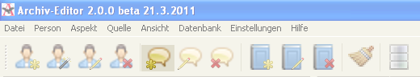
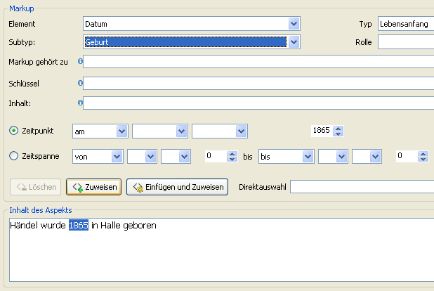
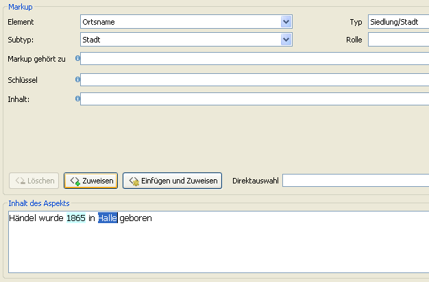

Ora vogliamo aggiungere il luogo e il dato di nascita di Handel. Cominciamo di nuovo nella barra di icone. Clicchiamo sulla fumetta con l’asterisco, che significa un nuovo aspetto.

Selezioniamo ancora la classificazione Semantica, ma ora ci serve "‘dati biografici"’.

Poi inseriamo il contenuto dell’aspetto nella cartella vuota.

Poi attribuiamo il markup per la data di nascita. Selezioniamo l’anno con il mouse o con la tastiera e selezioniamo il markup elemento "‘data"’, tipo "‘inizio della vita"’, poi "‘nascita"’. Finiamo il markup facendo clic sul bottone "‘Attribuire"’.

Ora vediamo che l’anno di nascita è evidenziato in azzurro.

Attribuiamoi ancora il markup per il luogo di nascita, con la stessa precedura, ma selezionando il markup "‘luogo"’ / "‘città"’ / "‘luogo di nascita"’:

Il luogo di nascita è evidenziato in giallo.

Prima di poter salvare l’aspetto bisogna sempre selezionare la fonte, e dobbiamo collegare l’aspetto con la persona di Handel sotto la scheda "‘Relazioni"’. Selezioniamo la persona Handel nella casella "‘aspetto di"’.

Il nome di Handel viene inserito nella casella automaticamente. Poi possiamo salvare l’aspetto.

Nella visualizzazione aspetti vediamo una nuova scheda, che è stata aggiunta automaticamente, per dati biografici.

Con lo stesso metodo tutti gli altri aspetti della persona possono essere aggiunti.